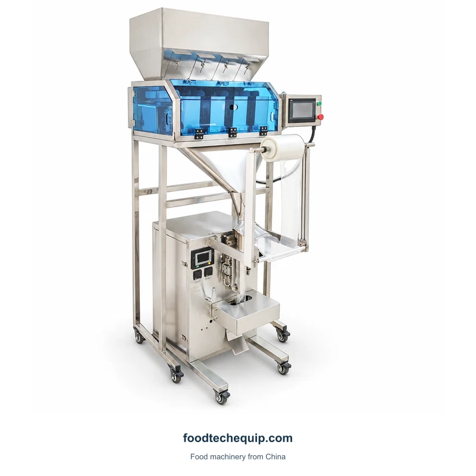

Embalagem em sachês
Máquina de embalagem de grânulos em sachês
Máquina vertical para embalar grânulos em sachês, com funil e alimentação de filme. Velocidade informada de 10–23 embalagens/min.
Ver equipamentoComece pelo material e pelo sachê final. Informe a dose, o comprimento, a largura, a estrutura do filme e o padrão de selagem. Um sachê de formato especial pode exigir um desenho com a borda da selagem e a linha de corte.
Máquina vertical para embalar grânulos em sachês, com funil e alimentação de filme. Velocidade informada de 10–23 embalagens/min.
Ver equipamento
Máquina com alimentação por filme para sachês de líquidos ou molhos com formato especial. A configuração 200 tem velocidade informada de 35–100 sachês/min.
Ver equipamento
Equipamento de embalagem de grânulos com montagem superior de múltiplas seções e manuseio de filme integrado.
Ver equipamento
Máquina de envase de líquidos em sachês com funil cônico e área inferior de embalagem fechada.
Ver equipamento
Equipamento de embalagem de grânulos vertical com alimentação de funil de alimentação, uma estrutura de manuseio de filme e seções de trabalho fechadas.
Ver equipamento
Equipamento de embalagem de molho vertical com manuseio de filme aéreo e um tubo de formação.
Ver equipamento
Máquina vertical de envase de molhos em sachês com funil cônico, bobina de filme e gabinete de controle.
Ver equipamento
Máquina vertical de envase de líquidos em sachês com unidade de formação, conexões de alimentação e comandos.
Ver equipamento
Máquina vertical de envase de pó em sachês com passagem de filme, unidade de formação e comandos.
Ver equipamento
Máquina vertical de envase de líquidos em sachês de filme composto de PET.
Ver equipamento
Máquina vertical de envase de molhos em sachês, com funil de alimentação superior e unidade de avanço de filme.
Ver equipamento
Embaladora de sachês com dosador volumétrico, disponível nas configurações com copo dosador grande, pequeno ou basculante.
Ver equipamento
Equipamento para embalagem de sachês de molhos combinando alimentação de funil, manuseio de filme e controles.
Ver equipamento
Embaladora de grânulos com dosador volumétrico por copos, alimentação superior e avanço vertical de filme.
Ver equipamento
Embaladora vertical de grânulos em sachês com alimentação superior, avanço de filme e comandos frontais.
Ver equipamento
Máquina para envase de pó em sachês com moega, passagem vertical de filme e comandos.
Ver equipamento
Embaladora de sachês com dosador volumétrico por copos, moega, porta-bobina e área vertical de embalagem.
Ver equipamentoTente uma palavra-chave diferente ou limpe os filtros.
Pó, grânulos, líquidos e molhos requerem diferentes arranjos de alimentação. Compartilhe uma amostra de material, porção alvo e layout do selo para definir o sachê finalizado.
Compare as taxas de embalagem e as dimensões do filme para a configuração selecionada. Distinga a largura do rolo, a largura do saco acabado e o comprimento do saco no seu desenho.
| Área de seleção | Critérios de comparação | O que fornecer |
|---|---|---|
| Alimentação de materiais | Pó, grânulos ou estado líquido | Amostra de material e porção alvo |
| Formação de pacote | Dimensões do rolo versus dimensões do sachê acabado | Especificação do filme e desenho da embalagem finalizada |
| Alta | Como cada embalagem preenchida é coletada | Manuseio downstream e espaço disponível |
Uma tarefa de sachê inclui o pacote de recebimento, bem como a preparação da porção. Se você precisar apenas de uma dose medida para uma etapa de embalagem existente, compare a dosagem separadamente. Descrever o pacote finalizado e quais operações o orçamento deve incluir.